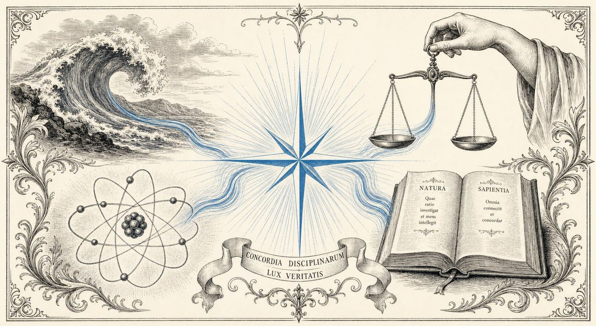
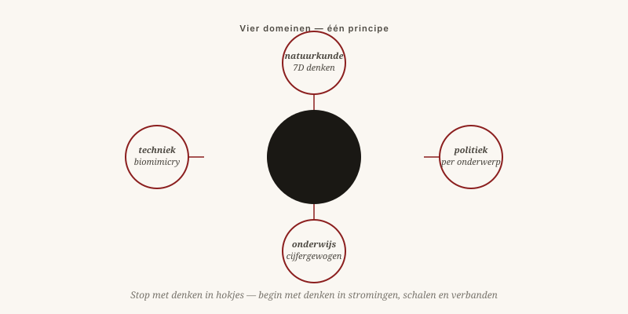

Eén draad door zeven onderwerpen: stop met denken in hokjes, begin met denken in stromingen, schalen en verbanden.
Door Jacobus van Merksteijn · 7 min lezen · 23 mei 2026

Concordia disciplinarum — eenheid van de vakken
Lees u deze editie van bovenaf, dan ziet u één draad. Het maakt niet uit of het onderwerp partijpolitiek, onderwijs, kernfusie of scheepscoatings is — de fout is steeds dezelfde, en de oplossing ook.
De fout: denken in hokjes, schalen en jaren-vooruit-rekenen.
De oplossing: denken in stromingen, dimensies en generaties-vooruit-rekenen.

Schaal, waarde en veelvoud als echte assen — niet als bijzaak. Donkere materie als schaalprobleem, niet als nieuw soort stof.
Meetbare prijs-prestatie, onafhankelijke controle, 24 beleidsgebieden elk met een eigen kringloop. Geen pakketstems meer.
Bekostiging op gemiddeld eindcijfer, niet op slagingspercentage. Risico terug in de kindertijd. Vrijheid voor scholen om anders te zijn.
Biomimicry als serieuze ingenieursdiscipline. Vortexreactor, haaienhuidfolie, selectieve warmtewering. Niet ertegen — ermee.
Aangroei voorkomen door transparantie en eenvoud, niet door belasting achteraf. Parasitisme glijdt eraf van een glad systeem.
Revolutie hier niet als omverwerping, maar als omkering: kijken vanuit een richting waar nog niemand stond. Galileo keek vanuit de zon. Darwin vanuit de variatie. Einstein vanuit het licht. Allemaal mensen die niet harder dachten dan hun tijdgenoten — ze keken van een andere kant.
"Een krant zonder discussie is een preek. Hier kan dat niet."
In komende edities werk ik elk onderwerp verder uit. Maar de keuze welk onderwerp als eerste terugkomt, ligt bij u. Reageer, spreek tegen, draag aan. Tot over een maand.
Eén draad door zeven onderwerpen: stop met denken in hokjes, begin met denken in stromingen, schalen en verbanden.
Lees u deze editie van bovenaf, dan ziet u één patroon. De fout is in elk vakgebied dezelfde: denken in hokjes, schalen en kortetermijnrekenen. De oplossing is ook steeds dezelfde: denken in stromingen, dimensies en generaties-vooruit-rekenen.
In de natuurkunde proberen we het heelal te verklaren met vier dimensies en raken we in de knoop bij donkere materie — meer dimensies durven nemen, G, W en N, lost dat op. In de politiek bundelen we honderd onderwerpen tot één stem en raken we in de knoop omdat geen partij past — per onderwerp beslissen lost dat op. In het onderwijs betalen we scholen per diploma en raken we in de knoop omdat het diploma daardoor minder waard wordt — betalen voor uitkomst lost dat op. In de techniek proberen we plasma op te sluiten met magneten en schepen te beschermen met gif — leren van de natuur en met haar meegaan lost dat op.
Galileo keek vanuit de zon. Darwin vanuit de variatie. Einstein vanuit het licht. Allemaal mensen die niet harder dachten dan hun tijdgenoten — ze keken van een andere kant. Dat is hier de uitnodiging: revolutie niet als omverwerping, maar als omkering.
Reageer, spreek tegen, draag aan. De keuze welk onderwerp als eerste terugkomt in de volgende editie, ligt bij u. „Een krant zonder discussie is een preek. Hier kan dat niet."
Klopt de bewering dat dit allemaal hetzelfde is? Of ben ik een patroon aan het zien dat er niet is? Wees streng.